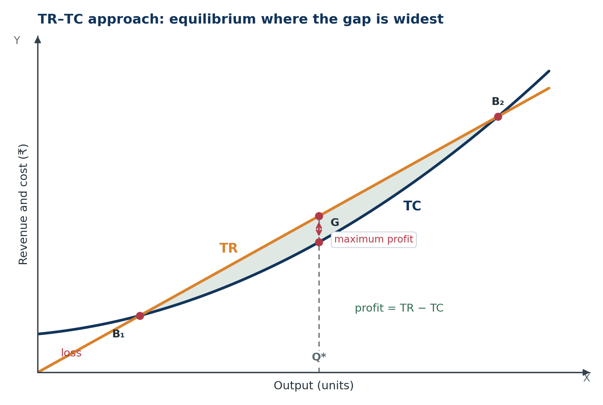
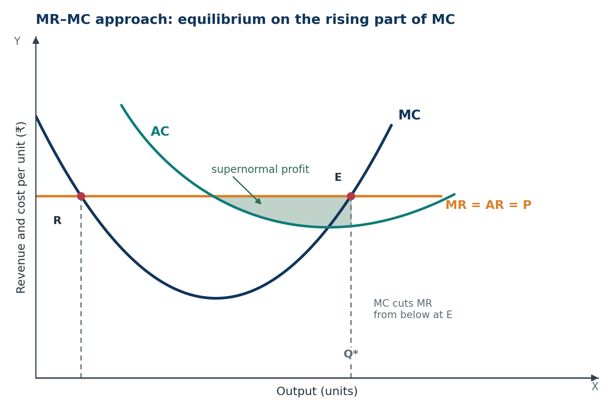
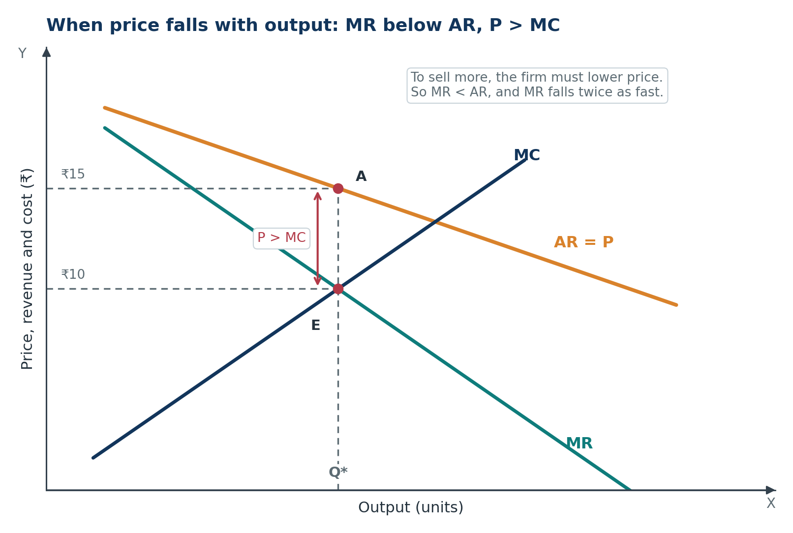
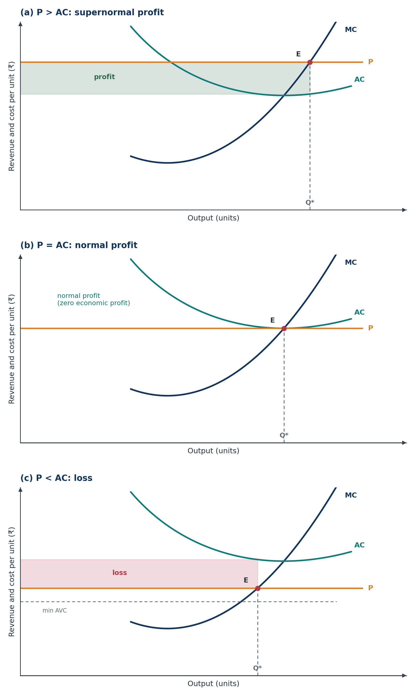
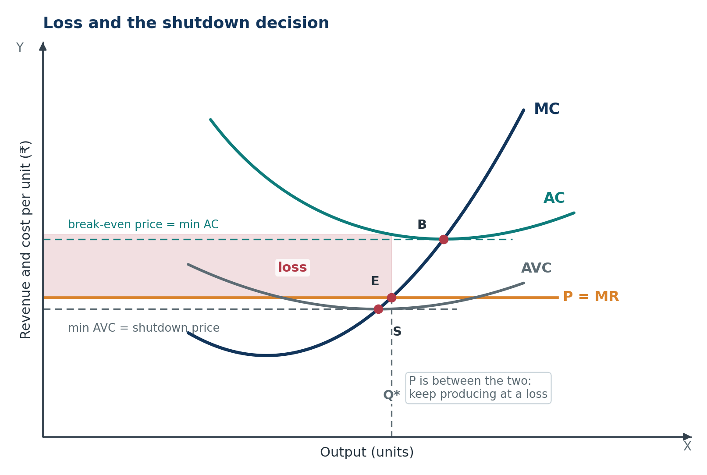

Microeconomics · Class 11Chapter 8Notes + quick revision
Producer's Equilibrium
A producer does not stop where revenue is highest. They stop where the last unit adds as much to revenue as it adds to cost — and where one more unit would cost more than it brings in.
Chapter at a glance
Nine stops: from what profit really means to the shutdown decision and a full numerical. Tap a card to jump straight in.
The one-line idea: a producer stops expanding at the output where the last unit adds as much to revenue as it adds to cost — and where one more unit would add more to cost than to revenue.
The core question: at what output should a producer stop expanding, and when should a loss-making firm shut down instead of producing?
Key Terms — Read These First
The words that carry marks. Read them once now, then test yourself after the chapter.
- Producer's equilibrium
- The price and output combination at which a producer earns the maximum possible profit; if profit is impossible, the output of minimum loss.
- Profit
- The excess of total revenue over total cost: π = TR − TC.
- Normal profit
- The minimum return needed to keep the entrepreneur in that business; an implicit cost, so zero economic profit.
- Supernormal profit
- Profit above normal profit, remaining after every cost — including normal profit — has been paid.
- Explicit cost
- Actual money paid to outsiders: wages, rent, raw material, electricity.
- Implicit cost
- The value of the entrepreneur's own factors — own shop, savings, labour — including normal profit.
- Total revenue (TR)
- Price multiplied by quantity sold: TR = P × Q.
- Total cost (TC)
- Total fixed cost plus total variable cost, including normal profit as an implicit cost.
- Marginal revenue (MR)
- The addition to total revenue from selling one more unit: MR = ΔTR ÷ ΔQ.
- Marginal cost (MC)
- The addition to total cost from producing one more unit: MC = ΔTC ÷ ΔQ.
- TR–TC approach
- Choosing the output where the vertical gap between TR and TC is largest and then starts to fall.
- MR–MC approach
- Choosing the output where MR = MC and MC is rising, cutting MR from below.
- Break-even point
- An output where TR = TC, so profit is zero. A TR–TC diagram normally has two.
- Break-even price
- The minimum point of AC; at this price the firm earns normal profit and no more.
- Shutdown point
- The minimum point of AVC; below this price the firm stops producing in the short run.
- Shutdown
- A short-run decision to produce nothing while the firm still exists and pays fixed cost.
- Exit
- A long-run decision to leave the industry, sell capital and stop paying fixed cost.
- Price taker
- A firm that cannot influence market price; P = AR = MR, as under perfect competition.
- Imperfect competition
- A market setting in which the firm must lower price to sell more, so AR slopes down and MR < AR.
- Minimum loss
- The least negative profit available when TC exceeds TR at every output; still an equilibrium.
Meaning of Producer's Equilibrium
The idea of this section. Equilibrium is not the output that earns the most revenue. It is the output where the gap between revenue and cost is as large as it can be — and beyond which that gap starts to shrink.
1.1 The producer's problem
Selling more brings in more revenue, but it also costs more. Somewhere between producing nothing and producing everything, the gap between revenue and cost is widest. That output is the producer's equilibrium.
Definition. Producer's equilibrium is the output at which a producer earns the maximum possible profit, given the cost of production and the revenue from sales. Under imperfect competition it is a price–output combination, because the firm also chooses price. Beyond that output, profit falls.
In simple words. It is the output at which the producer has no reason to expand and no reason to contract.
Example. A tea stall sells a cup for ₹10. The early cups cost little, because the stove is lit and the staff is paid anyway. Later cups cost more as extra help is hired and the stove is run longer. The owner keeps serving while each extra cup brings in more than it costs, and stops when the next cup would cost more than ₹10.
Two decisions are hidden here. The firm decides how much to produce and, when it has market power, what price to charge. Under perfect competition the second decision is out of its hands: the market sets the price, and the firm only chooses output.
1.2 Profit, cost and normal profit
Profit is the excess of total revenue over total cost.
Here π is profit, TR is total revenue and TC is total cost. A positive π means revenue exceeds cost; a negative π means the firm is making a loss.
Cost includes two kinds of items:
- Explicit costs: actual payments to outsiders — wages, rent, raw material, electricity, transport.
- Implicit costs: the value of the entrepreneur's own shop, savings and labour. The owner could have rented the shop or worked elsewhere; that forgone earning is a cost of running this business.
Normal profit is the minimum return an entrepreneur must earn to stay in that business. It is the reward for the owner's own factors and is counted as an implicit cost. So normal profit is already inside TC.
Example. Meera could earn ₹45,000 a month as an employee. She runs her own tailoring shop instead. If the shop's revenue exceeds all other costs by exactly ₹45,000, her economic profit is zero — but she is earning normal profit, the amount she gave up.
So “maximum profit” in this chapter means supernormal profit: the surplus left after normal profit has also been covered. Zero economic profit is not “no profit”; it is the normal return that keeps the entrepreneur in the business.
Exam line. Normal profit is treated as a cost because it is the minimum return required to prevent the entrepreneur from moving to the next best alternative.
1.3 Two approaches, two market settings
There are two equivalent ways to locate equilibrium:
| Approach | What it compares | What we look for |
|---|---|---|
| TR–TC approach | Total revenue with total cost at every output | The output where the gap TR − TC is largest and then starts to fall |
| MR–MC approach | The addition to revenue from one more unit with the addition to cost | The output where MR = MC and MC is rising |
The two approaches must agree. If the gap between TR and TC is widest, the last unit must have added equal amounts to both — that is exactly MR = MC.
The revenue side depends on the market setting:
- Perfect competition: the firm is a price taker. Price is the same at every output, so MR is constant and P = AR = MR.
- Imperfect competition: the firm must lower price to sell more. AR slopes down, and MR falls below AR.
This distinction matters later: a competitive firm's equilibrium can be written as P = MC, but a firm facing a downward-sloping demand curve must use MR = MC, which leaves P > MC.
- Q1. Define producer's equilibrium in one sentence.
- Q2. A firm's TR is ₹5,000 and its TC is ₹4,200, which includes ₹600 of normal profit. Find its supernormal profit.
- Q3. Why is normal profit treated as a cost?
Show answers
- The price and output combination at which the producer earns maximum profit, with profit falling beyond it; if supernormal profit is impossible, the output of minimum loss.
- ₹5,000 − ₹4,200 = ₹800. This is already supernormal profit because the ₹600 normal profit is inside TC.
- It is the minimum return needed to keep the entrepreneur in the business. If it is not earned, the owner moves to the next best alternative, so it is a real cost of using the owner's factors.
Why Profit Is Maximised at MR = MC
The idea of this section. A firm should keep producing an extra unit as long as that unit brings in more than it costs. It stops when the extra revenue and extra cost are equal.
2.1 Marginal revenue and marginal cost
Marginal revenue (MR) is the addition to total revenue from selling one more unit. Marginal cost (MC) is the addition to total cost from producing one more unit.
Here Δ means “change in”, TR is total revenue, TC is total cost and Q is output. Marginal values are about the next unit, not the average unit.
A small example. Suppose the 5th unit adds ₹100 to revenue and ₹70 to cost. Producing it raises profit by ₹30, so the firm should produce it. If the 6th unit adds ₹100 to revenue but ₹120 to cost, it lowers profit by ₹20, so the firm should not produce it.
2.2 The stopping rule
| Comparison | What the next unit does | Decision |
|---|---|---|
| MR > MC | Brings in more than it costs; profit rises by MR − MC | Expand output |
| MR < MC | Costs more than it brings in; profit falls | Contract output |
| MR = MC | Adds nothing to profit | Stay at this output |
Profit is not maximised because revenue is large, but because the last unit is exactly self-financing. If the firm stops before MR = MC, it leaves a profitable unit unproduced. If it goes beyond MR = MC, it produces a unit that destroys profit.
Not just MR = MC. The rule works only if MC is rising through the intersection. Before equilibrium MR is above MC; after it, MC is above MR. That switch is what makes the point a maximum.
2.3 Why a maximum, not a minimum
A U-shaped MC curve can cut a horizontal MR line twice. On the falling arm, MC is still dropping below MR as output expands, so extra units continue to raise profit. Stopping at that first crossing would leave profit at a minimum, not a maximum.
Only the second crossing — where MC is rising and cuts MR from below — passes the test. This is why the MR–MC approach has two conditions, not one:
- MR = MC — the necessary condition.
- MC is rising at that point — the sufficient condition.
Section 4 shows both crossings on a diagram and explains why the falling-arm point is a trap.
- Q1. Define MR and MC, and state the profit-maximising rule.
- Q2. At 10 units, MR is ₹15 and MC is ₹9. The 11th unit would have an MC of ₹18. Should the firm produce it?
- Q3. Why does profit rise as long as MR exceeds MC?
Show answers
- MR is the addition to TR from one more unit; MC is the addition to TC. Profit is maximised where MR = MC and MC is rising.
- No. The 11th unit adds ₹15 to revenue and ₹18 to cost, so profit falls by ₹3.
- When MR > MC, the net addition to profit is positive, so total profit rises with every such unit.
The TR–TC Approach
The idea of this section. Plot total revenue and total cost against output. Profit is the vertical distance between them. Equilibrium is where that distance is widest — the peak of the profit gap.
3.1 Profit as a gap between two curves
The firm compares total revenue and total cost at every output and picks the output where the vertical distance between them is greatest.
Here π(Q), TR(Q) and TC(Q) are profit, total revenue and total cost at output Q. On a diagram, TR and TC are two curves; profit is the gap between them.
Why TR is a straight line for a price taker. Every unit sells at the same market price, so each extra unit adds the same revenue. TR rises steadily from the origin. TC starts at fixed cost even when output is zero, then rises slowly at first and faster later as diminishing returns set in.
3.2 The three conditions
- The gap is at its maximum: TR − TC is larger here than at any other output.
- The gap is positive: TR > TC, so the firm earns supernormal profit.
- The gap falls afterwards: beyond this output TC rises faster than TR, so extra units reduce profit.
If no positive gap exists, the firm cannot earn supernormal profit. It then chooses the output where the gap is least negative: the minimum loss. That is still an equilibrium, because it is the best the firm can do with the market conditions it faces.
Watch the wording. “Maximum profit” can mean the largest positive profit or the smallest loss. In both cases, the firm is choosing the best available gap.
3.3 Reading the diagram

What to notice. The shaded band is profit. It opens at B1, widens to its maximum at Q*, and closes at B2. Outside that range TC is above TR and the firm makes a loss. At Q* the slopes of the two curves are equal — that is MR = MC.
A break-even point is an output where total revenue equals total cost, so profit is zero. There are two: one where the firm stops making a loss as it expands, and one where it starts making a loss again.
3.4 When the gap is never positive
Sometimes price is so low, or cost so high, that TC lies above TR at every output. The curves never cross, so there is no break-even point. The rule does not change: the firm looks for the widest gap, which is now the smallest loss, where the curves come closest.
Warning. “Equilibrium” does not mean “profit”. It means “the best output available”. For a firm in a bad market, that best outcome is the minimum loss.
This is why a loss-making firm can still be in equilibrium. It is not failing to maximise profit; it is maximising profit subject to the fact that no positive profit exists. Section 6 then asks whether it should produce at all.
- Q1. State the conditions for equilibrium under the TR–TC approach.
- Q2. Find the equilibrium output and profit for the schedule below.
- Q3. Why is equilibrium at the maximum gap, not at the highest TR?
| Output (units) | 0 | 1 | 2 | 3 | 4 | 5 |
|---|---|---|---|---|---|---|
| TR (₹) | 0 | 20 | 40 | 60 | 80 | 100 |
| TC (₹) | 30 | 44 | 53 | 58 | 69 | 92 |
Show answers
- (i) The gap between TR and TC is at its maximum; (ii) TR > TC; (iii) after this output TC rises faster than TR.
- Profit is −30, −24, −13, 2, 11 and 8. The gap is largest at 4 units, where profit is ₹11.
- TR ignores cost. Profit, not revenue, is what the producer keeps, so a larger TR can still mean a smaller profit if TC rises even faster.
The MR–MC Approach
The idea of this section. Instead of comparing totals, compare the next unit's revenue with the next unit's cost. Stop exactly where the two are equal — but only on the rising arm of MC.
4.1 The two conditions
- MR = MC. The addition to revenue from the last unit equals the addition to cost.
- MC must be rising at that point. The MC curve must cut the MR curve from below, so MC exceeds MR just to the right of the intersection.
The first is the necessary condition; the second is the sufficient condition. An answer that gives only MR = MC is incomplete and can lose a mark.
4.2 Why MR = MC alone is not enough
A U-shaped MC curve can meet a horizontal MR line at two points, one on each arm. Only the rising-arm point is equilibrium.

What to notice. At R, MC is falling. To its right MC is below MR, so extra units still add to profit; stopping there would be a mistake. R is a point of minimum profit. At E, MC is rising and crosses MR from below: to its left MR > MC, to its right MC > MR. Only E passes both tests.
Two crossings, one answer. The first crossing is tempting because it satisfies the equation. The direction of the crossing decides whether it is a maximum or a minimum.
4.3 Either side of equilibrium
Left of E: MR > MC, so each extra unit adds more to revenue than to cost and output should expand.
Right of E: MC > MR, so each extra unit reduces profit and output should contract.
At E: the two forces balance. There is no reason to move in either direction. That is exactly what “equilibrium” means.
4.4 Perfect competition: P = MC
A competitive firm is a price taker, so price, average revenue and marginal revenue are equal.
Substituting into the equilibrium condition gives the working rule for a competitive firm:
This is not a different theory. It is the same MR = MC rule after replacing MR with price, which is legitimate only because the competitive firm can sell every extra unit at the unchanged market price.
| Feature | Perfect competition | Consequence |
|---|---|---|
| Price setting | Firm is a price taker | Price does not change when the firm changes output |
| Average revenue | AR = P | Every unit sells at the same price |
| Marginal revenue | MR = P | Each extra unit adds exactly the price |
| Equilibrium | MR = MC becomes P = MC | Valid only with MC rising |
4.5 When price falls with output
A firm facing a downward-sloping demand curve cannot sell an extra unit at the old price. To sell more it must lower the price — and, in the usual textbook treatment, the lower price applies to every unit sold. The extra revenue from the new unit is therefore less than the price of that unit: MR lies below AR, and for a straight-line AR curve MR falls twice as fast.
The lecture table makes the equilibrium visible. Price falls as output rises, so this is not perfect competition.
| Output Q (units) | Price P = AR (₹) | TR (₹) | TC (₹) | MR (₹) | MC (₹) | Profit = TR − TC (₹) |
|---|---|---|---|---|---|---|
| 1 | 8 | 8 | 6 | 8 | 6 | 2 |
| 2 | 7 | 14 | 11 | 6 | 5 | 3 |
| 3 | 6 | 18 | 15 | 4 | 4 | 3 |
| 4 | 5 | 20 | 20 | 2 | 5 | 0 |
| 5 | 4 | 20 | 26 | 0 | 6 | −6 |
Reading the table.
- Profit rises from ₹2 to ₹3, stays at ₹3 at 3 units, then falls to zero and turns negative.
- MR = MC at 3 units, where both are ₹4. MC rises to ₹5 at the next unit, so the second condition is satisfied.
- At 3 units the price on the AR curve is ₹6, while MC is ₹4. Therefore P > MC at equilibrium.
- Profit is the same at 2 and 3 units because the third unit adds ₹4 of revenue and ₹4 of cost. The table's maximum is a plateau. Equilibrium is taken as 3 units because that is where MR = MC with MC rising; at 2 units MR (₹6) is still above MC (₹5), so the firm has not yet reached the stopping point, and beyond 3 units profit falls.
Figure 8.3 draws the smooth version of the same idea with different numbers.

What to notice. The equilibrium condition is still MR = MC, not P = MC. Price is then read vertically up from Q* to the AR curve. Because MR < AR at every output, and MR = MC at equilibrium, price must exceed MC.
| Market setting | Revenue relation | Equilibrium condition | Price versus MC |
|---|---|---|---|
| Perfect competition | P = AR = MR | P = MC with MC rising | P = MC |
| Price falls with output | P = AR > MR | MR = MC with MC rising | P > MC |
Exam trap. Do not write P = MC for a firm facing a downward-sloping demand curve. The general rule is MR = MC; only a price-taking firm can replace MR with P.
- Q1. State the two conditions for equilibrium under the MR–MC approach.
- Q2. MC cuts a horizontal MR line at Q = 2, where MC is falling, and again at Q = 8, where it is rising. Which is equilibrium?
- Q3. Why is the falling-arm intersection not an equilibrium? Why is price greater than MC at equilibrium when price falls with output?
Show answers
- (i) MR = MC; (ii) MC must be rising, cutting MR from below.
- Q = 8. At Q = 2, MC is still below MR to the right, so extra units add to profit. At Q = 8, MC is rising, so output beyond 8 reduces profit.
- At the falling-arm crossing MC is below MR to its right, so producing more still adds to profit. When price falls with output, MR < AR = P; equilibrium sets MR = MC, so P > MC.
Profit, Normal Profit and Loss
The idea of this section. MR = MC finds the output. Whether the firm is earning a fortune, just covering everything, or losing money depends on where price sits relative to average cost at that output.
5.1 Three situations
Once equilibrium output is known, profit depends on where price stands relative to average cost.
| Situation | Price and cost | Revenue and cost | Name |
|---|---|---|---|
| Favourable | P > AC | TR > TC | Supernormal profit |
| Break-even | P = AC | TR = TC | Normal profit |
| Unfavourable | P < AC | TR < TC | Loss |
Here P is price, AC is average cost at the equilibrium output and Q is that output. If the bracket is negative, the result is a loss.
Supernormal profit is profit above normal profit — what remains after every cost, including the owner's normal return, is paid. Normal profit is zero economic profit: all costs are covered, including the implicit cost of the owner's factors. A loss means revenue does not cover full cost; in the short run the firm may still produce, as Section 6 explains.
5.2 The same three cases under perfect competition
For a competitive firm P = AR = MR, so one horizontal line is price, AR and MR at once. Compare that line with AC at equilibrium:
- Above AC: the firm earns supernormal profit.
- Touching minimum AC: the firm earns normal profit.
- Below AC: the firm makes a loss.
The firm cannot choose the price, so it adjusts quantity until P = MC. Price then determines whether the equilibrium rectangle is a profit or a loss.
Order of operations. First find Q* where P = MC (MC rising). Then compare P with AC at that same Q*. Never compare price with AC at a different output.
5.3 The three situations in one diagram
Figure 8.4 stacks the three cases so each one stays readable. All three panels use the same cost curves; only the price line changes. Because the firm is a price taker, that line is price, AR and MR at once.

Reading each panel.
- (a) P > AC. Equilibrium is at E, where the price line meets the rising MC. Profit per unit is P − AC, and total profit is the shaded rectangle (P − AC) × Q*.
- (b) P = AC. The price line touches the AC curve at its minimum. Profit per unit is zero, so the firm earns normal profit — zero economic profit. The profit rectangle collapses to a point. This price is the break-even price.
- (c) P < AC. The vertical gap is now a loss per unit, AC − P, and the shaded rectangle is the total loss. The firm still produces because price is above minimum AVC; Section 6 explains why.
What to notice. Q* is different in each panel: as price changes, equilibrium slides along the MC curve. The test for profit is always the same — compare price with AC at that equilibrium output, not at some other output.
- Q1. Distinguish normal profit from supernormal profit.
- Q2. A firm sells 50 units at ₹20 each; AC is ₹16. Find profit. If price falls to ₹12, which panel of Figure 8.4 applies, and what is the loss?
- Q3. Why does a firm earning only normal profit stay in business?
Show answers
- Normal profit is the minimum return needed to keep the entrepreneur in business and is included in cost; it is zero economic profit. Supernormal profit is what remains after normal profit has been paid.
- Profit per unit = ₹20 − ₹16 = ₹4, total = ₹200. At ₹12, the loss per unit is ₹16 − ₹12 = ₹4 and the total loss is ₹200; this is panel (c), P < AC.
- Normal profit is already part of cost, so the owner earns exactly what the next best alternative offers. Leaving would not improve their position.
The Shutdown Decision
The idea of this section. A loss-making firm does not automatically stop. Fixed cost is due anyway. The real question is whether producing makes the loss smaller than shutting down.
6.1 Fixed cost and the short run
In the short run, fixed cost is payable whether the firm produces or not: rent and insurance do not vanish when the machines stop. So a loss-making firm asks not “am I making a loss?” but “is the loss smaller if I produce or if I stop?”
Shutting down means producing nothing for now while the firm still exists and pays fixed cost. It is a short-run decision, and the firm can restart.
Key comparison. If the firm shuts down, its loss equals TFC. If it produces, its loss equals TFC − (TR − TVC). Producing is better whenever TR covers TVC and contributes something towards fixed cost.
6.2 The three price zones
The answer depends on where price lies relative to two landmarks: minimum AVC and minimum AC. The diagram and zones below use a price-taking firm, so price is also marginal revenue.
- At or above minimum AC. All costs are covered; the firm produces where MR = MC — that is, P = MC for this price taker — and earns normal or supernormal profit.
- Between minimum AVC and minimum AC. Revenue covers all variable cost and part of fixed cost, so the loss is smaller than the fixed cost lost by shutting down. The firm produces on.
- Below minimum AVC. Revenue does not cover variable cost, so producing adds to the loss; the firm shuts down and loses only fixed cost.
Do not confuse the two uses of “break-even”. Section 3's break-even points are outputs where TR = TC. The break-even price here is minimum AC. The shutdown price is minimum AVC, which lies below the break-even price.

What to notice. At Q* the firm is on the rising part of MC, so P = MC holds. The loss rectangle has height AC − P and width Q*. Below the dashed line at minimum AVC the firm would produce nothing, because each unit would fail to cover its variable cost.
6.3 A numerical illustration
A firm has fixed cost ₹500 and variable cost ₹600 at 100 units, so TC is ₹1,100, AVC is ₹6 and AC is ₹11. Take ₹6 and ₹11 as the minimum AVC and minimum AC.
| Price (₹) | TR (₹) | TVC (₹) | Profit or loss if it produces (₹) | Loss if it shuts down (₹) | Decision |
|---|---|---|---|---|---|
| 12 | 1,200 | 600 | +100 | 500 | Produce |
| 11 | 1,100 | 600 | 0 | 500 | Produce |
| 7 | 700 | 600 | −400 | 500 | Produce |
| 5 | 500 | 600 | −600 | 500 | Shut down |
At ₹12 the firm earns ₹100; at ₹11 it breaks even. At ₹7 it loses ₹400, but shutting down would cost ₹500, so producing is better by ₹100. At ₹5 revenue does not cover variable cost and the firm shuts down. At exactly ₹6 it is indifferent, because TR just covers TVC and the loss equals fixed cost either way.
The decision rule in one line: produce if P ≥ minimum AVC; shut down if P < minimum AVC.
6.4 Shutting down is not exiting
| Basis | Shutdown | Exit |
|---|---|---|
| Time horizon | Short run | Long run |
| Output | Zero for now | Zero permanently |
| Fixed cost | Still payable | No longer payable; capital is sold |
| Industry status | Firm still exists in the industry and can restart | Firm leaves the industry |
A shutdown is a pause, not a funeral. The firm keeps its factory and its place in the market; it simply waits for price to recover above minimum AVC.
- Q1. Define the shutdown price and the break-even price.
- Q2. A firm has TFC of ₹300 and TVC of ₹500 at 50 units. Price is ₹12. Should it produce or shut down?
- Q3. Why would a firm produce at a price below average cost?
Show answers
- Shutdown point: minimum AVC, below which the firm stops producing. Break-even point: minimum AC, where profit is normal.
- TR = ₹600 and TC = ₹800, so producing loses ₹200; shutting down costs ₹300. It should produce.
- Part of cost is fixed and must be paid anyway. If price covers variable cost and contributes towards fixed cost, the loss from producing is smaller than the loss from shutting down.
A Worked Example
The idea of this section. One table, read three ways: complete the marginal columns, find equilibrium with TR–TC, confirm it with MR–MC, then check whether the firm should produce at all.
7.1 The table
A firm sells in a perfectly competitive market at ₹10. Complete the marginal columns and find equilibrium.
| Output Q (units) | Price P (₹) | TR (₹) | TC (₹) | MR (₹) | MC (₹) | Profit (₹) |
|---|---|---|---|---|---|---|
| 0 | 10 | 0 | 20 | — | — | −20 |
| 1 | 10 | 10 | 30 | 10 | 10 | −20 |
| 2 | 10 | 20 | 38 | 10 | 8 | −18 |
| 3 | 10 | 30 | 44 | 10 | 6 | −14 |
| 4 | 10 | 40 | 52 | 10 | 8 | −12 |
| 5 | 10 | 50 | 64 | 10 | 12 | −14 |
| 6 | 10 | 60 | 80 | 10 | 16 | −20 |
Each MR is ₹10 because price is constant. Each MC is the rise in TC from the previous row: 10, 8, 6, 8, 12 and 16. Profit is TR − TC.
7.2 The TR–TC reading
The profit column is the gap. It starts at −₹20, improves to −₹12 at 4 units, then worsens. The gap is at its maximum — here, its least negative — at 4 units: between 4 and 5 units, TR rises by ₹10 while TC rises by ₹12.
Notice that the firm never earns a positive profit. Its equilibrium is still 4 units because that is where the gap is least negative. The minimum loss is ₹12.
7.3 The MR–MC reading
MR is ₹10 throughout. MC is ₹10 at the first unit, falls to ₹8 and ₹6, then rises to ₹8, ₹12 and ₹16.
- For units 2 to 4, MC is below MR, so each unit adds to profit; the first unit only matches MR.
- At 5 units, MC is ₹12, above MR, so profit falls by ₹2 — exactly the fall from −₹12 to −₹14.
- The table's equilibrium is 4 units.
7.4 Why not Q = 1?
At Q = 1, MR = MC = ₹10, yet profit is −₹20, the worst value in the table, because MC is falling there: it drops to ₹8 and ₹6 for the next units, well below MR. The MC curve cuts MR from above, not below — the same as point R in Figure 8.2 — so the second condition fails.
The table's second crossing lies between Q = 4 and Q = 5, where MC rises from ₹8 to ₹12 and passes through ₹10. On smooth curves MR = MC at about 4.5 units with MC rising. A discrete table cannot show half a unit, so it reports the last whole unit with MC below MR: 4 units.
Warning. Do not round up to 5 units because MC = ₹10 lies between 4 and 5. The fifth unit costs ₹12, more than the ₹10 it brings in.
7.5 The shutdown check
Fixed cost is TC at zero output: ₹20. At 4 units TC is ₹52, so TVC is ₹32. Revenue of ₹40 covers variable cost and leaves ₹8 towards fixed cost, so the loss is ₹12 — less than the ₹20 lost by shutting down.
AVC is ₹32 ÷ 4 = ₹8, below the price of ₹10, so both tests are satisfied and the firm produces. This is a loss-making equilibrium, but it is still the best short-run choice.
- Q1. In the table, MR = MC at Q = 1. Why is Q = 1 not equilibrium?
- Q2. Compare the loss at Q = 4 with the loss from shutting down. Which is smaller?
- Q3. Why is this equilibrium a minimum loss rather than a maximum profit?
Show answers
- At Q = 1, MC is falling and stays below MR for the next units, so producing more still adds to profit. The condition that MC must be rising fails.
- The loss at Q = 4 is ₹12; shutting down loses the fixed cost of ₹20. Producing is better by ₹8.
- TC is above TR at every output, so no positive profit is available. The best the firm can do is the output where the gap is least negative.
Common Mistakes
The idea of this section. Most lost marks in this chapter come from mixing up conditions, outputs and prices. Read each wrong statement with its correction.
| Mistake | Correct idea |
|---|---|
| “MR = MC is the only condition.” | MC must also be rising. A falling MC crossing gives minimum profit. |
| “At equilibrium, price must equal MC.” | P = MC only for a price taker. When price falls with output, MR < AR, so P > MC at equilibrium. |
| “Profit depends on price versus MC.” | MC locates the output; profit depends on price versus AC at that output. |
| “Normal profit is paid after costs.” | Normal profit is an implicit cost, already inside TC. |
| “Zero economic profit means the firm should quit.” | Zero economic profit is normal profit. The owner is earning the next best alternative. |
| “Equilibrium always means profit.” | Equilibrium is the best available outcome; it can be a minimum loss. |
| “Produce where TR is highest.” | Produce where TR − TC is highest, not where TR alone is highest. |
| “The shutdown point is minimum AC.” | The shutdown price is minimum AVC; minimum AC is the break-even price. |
| “A firm shuts down as soon as P < AC.” | It shuts down only when P < minimum AVC. Between minimum AVC and minimum AC it produces at a loss. |
| “Shutting down means leaving the industry.” | Shutting down is a short-run pause; exiting is a long-run departure. |
Quick self-test. Cover the right column and explain each correction aloud. If you can do all ten without looking, the conceptual traps are handled.
Recap, Formulas and Exam Practice
9.1 Chapter recap
- Producer's equilibrium is the output of maximum profit, or minimum loss when profit is impossible.
- Profit is TR − TC, and TC includes normal profit, so “profit” here means supernormal profit.
- A firm expands while MR > MC, contracts when MR < MC, and stops where MR = MC with MC rising.
- The TR–TC approach looks for the widest positive gap, which then falls.
- There are two break-even points, where TR = TC, one on each side of equilibrium.
- MR = MC alone is not enough; only the rising-arm crossing is equilibrium.
- Under perfect competition P = AR = MR, so P = MC with MC rising.
- When price falls with output, AR slopes down and MR lies below AR; equilibrium still needs MR = MC, so P > MC.
- At equilibrium, compare P with AC: above gives supernormal profit, equal gives normal profit, below gives a loss.
- Profit or loss is the per-unit gap (P − AC) multiplied by Q*.
- Below AC a firm may still produce; it shuts down only below minimum AVC, and the break-even price is minimum AC.
9.2 Formula sheet
| Concept | Formula | Remember |
|---|---|---|
| Profit | π = TR − TC | TC includes normal profit. |
| Marginal revenue | MR = ΔTR ÷ ΔQ | Addition to TR from one more unit. |
| Marginal cost | MC = ΔTC ÷ ΔQ | Addition to TC from one more unit. |
| TR–TC equilibrium | TR − TC maximum, then falling | Gap must be positive for supernormal profit. |
| MR–MC equilibrium | MR = MC and MC rising | Both conditions are needed. |
| Perfect competition | P = AR = MR | Firm is a price taker. |
| Imperfect competition | AR > MR, so P > MC at equilibrium | Firm must lower price to sell more. |
| Competitive equilibrium | P = MC with MC rising | The same rule in price language. |
| Profit per unit | P − AC | Multiply by Q for total profit. |
| Total profit or loss | (P − AC) × Q | A negative value means a loss. |
| Three profit cases | P > AC, P = AC, P < AC | Supernormal, normal, loss. |
| Break-even price | Minimum AC | Normal profit, zero economic profit. |
| Shutdown price | Minimum AVC | Below it, loss exceeds TFC. |
9.3 Exam-style questions
Very short answer (1 mark)
- Define producer's equilibrium.
- State the profit-maximising condition in terms of MR and MC.
- What is the shutdown point of a firm?
- If price is ₹8 and AC is ₹10, what is the profit per unit?
- What is meant by normal profit?
Short answer (3 marks)
- Why is MR = MC necessary but not sufficient for equilibrium?
- Distinguish between the break-even price and the shutdown price.
- A firm's TR is ₹900, TC is ₹1,000 and TFC is ₹300. Should it shut down in the short run?
- Explain the TR–TC approach to producer's equilibrium.
- When price falls with output, why is price greater than marginal cost at equilibrium?
Long answer (4–6 marks)
- Explain producer's equilibrium using the MR–MC approach with a diagram.
- Explain the TR–TC approach with a diagram. Why are there two break-even points?
- Explain the shutdown decision in the short run, using a diagram.
- Explain producer's equilibrium when price falls with output, using a schedule and a diagram.
- Draw and explain the three profit situations of a firm.
Show answer pointers
Very short answer
- The price and output combination at which the producer earns maximum profit.
- MR = MC, with MC rising at the intersection.
- The minimum point of AVC; below this price the firm stops producing in the short run.
- Loss per unit = ₹10 − ₹8 = ₹2.
- The minimum return needed to keep the entrepreneur in business; zero economic profit.
Short answer
- MC can cut MR at two outputs. At the falling-arm crossing MC is still below MR to the right, so profit can be raised by expanding; only the rising-arm crossing is equilibrium.
- Break-even price = minimum AC (normal profit). Shutdown price = minimum AVC (price just covers variable cost); it lies below the break-even price.
- TVC = ₹700. TR of ₹900 covers TVC and leaves ₹200 for fixed cost, so the loss is ₹100, less than the ₹300 lost by shutting down.
- Profit is the gap between TR and TC. Equilibrium is where the gap is maximum and positive, and where TC then rises faster than TR.
- The firm must lower price to sell more, so AR > MR. Equilibrium sets MR = MC; price is read off AR, so P > MC.
Long answer
- State both conditions. MR is horizontal and U-shaped MC cuts it twice: R on the falling arm, E on the rising arm. Left of E MR > MC; right of E MC > MR.
- TR is a straight line from the origin; TC starts at fixed cost and rises at an increasing rate. The gap widens, peaks and narrows, and TR = TC at two outputs.
- TFC is payable at zero output. Between minimum AVC and minimum AC, revenue covers variable cost and part of fixed cost, so the firm produces where P = MC.
- Build a schedule with price falling as output rises. MR lies below AR. Find the output where MR = MC with MC rising; read the price from AR at that output, and note that P > MC.
- Use one set of MC and AC curves. Place the price line above AC for supernormal profit, at minimum AC for normal profit, and below AC for a loss; mark E where P = MC and shade (P − AC) × Q*.
9.4 One-minute revision
| Must know | The point |
|---|---|
| Meaning | Output of maximum profit, or minimum loss when profit is impossible. |
| Profit | TR − TC, with normal profit already inside TC. |
| MR–MC rule | MR = MC and MC rising. |
| Why MC rising | Two intersections are possible; only the rising one is a maximum. |
| TR–TC rule | Widest positive gap between TR and TC; two break-even points. |
| Perfect competition | P = AR = MR, so equilibrium is P = MC with MC rising. |
| Price falls with output | AR slopes down and MR < AR; equilibrium is MR = MC, so P > MC. |
| Three situations | P > AC supernormal; P = AC normal; P < AC loss. |
| Shutdown | Produce at a loss if P ≥ minimum AVC; stop below it. |
| Shutdown vs exit | Short-run pause with fixed cost still due vs long-run departure. |
Quick revision, done properly
How to use this file (30 seconds): read one block → cover it → answer the recall questions aloud → open the answer to check → move on. Total time: about 18 minutes.
- 01Readone block of notes
- 02Coverthe page and recall
- 03Answerthe drill aloud
- 04Checkand move on
24 recall questions · one confusion clinic · one rapid-fire table · one blank-page test.
Profit + TR–TC
The chapter in 12 lines
- Producer's equilibrium is the price–output combination of maximum profit, or minimum loss when profit is impossible.
- Profit = TR − TC. A negative profit is a loss.
- Normal profit is the minimum return needed to keep the owner in business; it is an implicit cost inside TC.
- Supernormal profit is what remains after every cost, including normal profit, is paid.
- The TR–TC approach looks for the widest gap between total revenue and total cost.
- For a price taker, TR is a straight line from the origin; TC starts at fixed cost and rises at an increasing rate.
- A positive gap opens, peaks and closes. Equilibrium is at the peak.
- The two crossings where TR = TC are the break-even points.
- MR is the addition to TR from one more unit; MC is the addition to TC.
- If MR > MC, expand; if MR < MC, contract.
- Stop where MR = MC — but only if MC is rising.
- If no positive gap exists, equilibrium is the minimum loss, where the gap is least negative.
Profit, cost and normal profit
| Basis | Normal profit | Supernormal profit |
|---|---|---|
| Meaning | Minimum return needed to keep the entrepreneur in the business | Surplus left after every cost, including normal profit, is paid |
| Where it sits | Inside TC as an implicit cost | Above TC; the extra reward |
| Economic profit | Zero | Positive |
| Diagram | P = minimum AC | P > AC at equilibrium |
In one line: zero economic profit is not zero accounting profit. The owner is still earning normal profit, which is already counted as a cost.
The TR–TC test
| Output | TR (₹) | TC (₹) | Profit (₹) | What is happening |
|---|---|---|---|---|
| 0 | 0 | 30 | −30 | Loss equals fixed cost |
| 1 | 20 | 44 | −24 | Loss shrinks |
| 2 | 40 | 53 | −13 | Loss shrinks |
| 3 | 60 | 58 | +2 | First break-even crossed |
| 4 | 80 | 69 | +11 | Widest gap: equilibrium |
| 5 | 100 | 92 | +8 | Gap is closing |
The maximum is at 4 units, where profit is ₹11. TR is highest at 5 units, but TC rises by ₹23 while TR rises by only ₹20, so profit falls. This is why “produce where TR is highest” is wrong.
Three conditions: (1) the gap is at its maximum; (2) the gap is positive; (3) after that output, TC rises faster than TR. If the gap is never positive, choose the least negative gap.
Recall drill — Session 1
Define producer's equilibrium.
Show answer
The price and output combination at which a producer earns maximum profit; if profit is impossible, the output of minimum loss.
Write the profit formula and say what “normal profit” means.
Show answer
π = TR − TC. Normal profit is the minimum return needed to keep the entrepreneur in the business; it is an implicit cost, so zero economic profit.
Why is normal profit included in cost?
Show answer
Because without it the owner would leave for the next best alternative. It is a real opportunity cost of the owner's factors.
What does the TR–TC approach look for?
Show answer
The output where the vertical gap between TR and TC is largest and then starts to fall; if TC is always above TR, the least negative gap.
Why is TR a straight line for a perfectly competitive firm?
Show answer
Because the firm is a price taker: every unit sells at the same price, so each extra unit adds the same revenue.
What are the two break-even points?
Show answer
The two outputs where TR = TC: one where the firm stops making a loss as it expands, and one where it starts making a loss again.
From the table, find equilibrium and explain why 5 units is not better.
Show answer
Equilibrium is 4 units, profit ₹11. At 5 units profit is ₹8 because TC rises by ₹23 while TR rises by ₹20.
Can equilibrium be a loss? Explain in one sentence.
Show answer
Yes. When TC exceeds TR at every output, the best available outcome is the output where the loss is smallest, and that is still equilibrium.
MR–MC + Profit Cases
The two MR–MC conditions
| Condition | What it means | What goes wrong if it fails |
|---|---|---|
| MR = MC | The last unit adds equal amounts to revenue and cost | If MR > MC, expand; if MR < MC, contract |
| MC is rising | MC cuts MR from below at that point | At a falling-arm crossing, MC is still below MR to the right, so profit can rise by expanding |
Both marks, both conditions. Write “MR = MC with MC rising” — not just “MR = MC”. The first is necessary; the second is sufficient.
| Position | Comparison | Effect of one more unit | Action |
|---|---|---|---|
| Left of E | MR > MC | Profit rises by MR − MC | Expand |
| At E | MR = MC | Profit does not change | Stay put |
| Right of E | MC > MR | Profit falls by MC − MR | Contract |
Perfect vs imperfect competition
| Feature | Perfect competition | Price falls with output |
|---|---|---|
| Price setting | Price taker; market sets P | Must lower P to sell more |
| AR curve | Horizontal at P | Downward-sloping |
| MR relation | P = AR = MR | AR > MR; MR falls twice as fast if AR is a straight line |
| Equilibrium | P = MC with MC rising | MR = MC with MC rising |
| Price vs MC | P = MC | P > MC |
Why P > MC when price falls with output: equilibrium sets MR = MC. But the firm must lower price to sell more, so AR (price) is above MR. Since MC equals MR and P equals AR, P must be above MC.
| Q | P = AR (₹) | TR (₹) | MR (₹) | MC (₹) | Profit (₹) |
|---|---|---|---|---|---|
| 1 | 8 | 8 | 8 | 6 | 2 |
| 2 | 7 | 14 | 6 | 5 | 3 |
| 3 | 6 | 18 | 4 | 4 | 3 |
| 4 | 5 | 20 | 2 | 5 | 0 |
| 5 | 4 | 20 | 0 | 6 | −6 |
At 3 units, MR = MC = ₹4 with MC rising. Price is read from AR at ₹6, so P > MC. The profit plateau at 2 and 3 units is resolved in favour of 3 because at 2 units MR is still above MC.
Three profit situations
| Situation | Price vs AC | Profit per unit | Total | Name |
|---|---|---|---|---|
| Favourable | P > AC | P − AC, positive | (P − AC) × Q* | Supernormal profit |
| Break-even | P = AC | Zero | Zero economic profit | Normal profit |
| Unfavourable | P < AC | P − AC, negative | (P − AC) × Q* | Loss |
Locate first, compare second. Find Q* from P = MC (or MR = MC), then compare P with AC at that Q*. Never compare P with AC at a different output.
| Panel | Price line | Equilibrium | Rectangle |
|---|---|---|---|
| (a) Supernormal profit | Above AC | P cuts rising MC | (P − AC) × Q*, shaded profit |
| (b) Normal profit | At minimum AC | P = MC at minimum AC | Collapses to a point |
| (c) Loss | Below AC, above minimum AVC | P cuts rising MC | (AC − P) × Q*, shaded loss |
Recall drill — Session 2
State the two conditions for MR–MC equilibrium.
Show answer
(i) MR = MC; (ii) MC must be rising, cutting MR from below.
Why is MR = MC alone not enough?
Show answer
A U-shaped MC curve can cut MR twice. At the falling-arm crossing, MC is still below MR to the right, so expanding raises profit. Only the rising-arm crossing is a maximum.
What is the rule for a perfectly competitive firm?
Show answer
P = MC with MC rising, because the price taker has P = AR = MR.
Why does MR lie below AR when price falls with output?
Show answer
To sell another unit the firm must lower price on all units, so the extra revenue is less than the new price. For a straight-line AR, MR falls twice as fast.
At equilibrium with falling price, why is P > MC?
Show answer
Equilibrium sets MR = MC, but P = AR > MR. Therefore P > MC.
A firm has P = ₹20 and AC = ₹16 at 50 units. Find its profit.
Show answer
Profit per unit = ₹4; total = ₹4 × 50 = ₹200.
If P is below AC but above minimum AVC, what is the situation?
Show answer
A loss, but the firm still produces in the short run because revenue covers variable cost and contributes towards fixed cost.
Which price is the break-even price, and what profit is earned there?
Show answer
Minimum AC. At that price the firm earns normal profit — zero economic profit.
Shutdown + Worked Example
The shutdown decision
| Price zone | What revenue covers | Loss compared with shutdown | Decision |
|---|---|---|---|
| P ≥ minimum AC | All costs | No loss; normal or supernormal profit | Produce at P = MC |
| Minimum AVC ≤ P < minimum AC | All TVC and part of TFC | Smaller than TFC | Produce at a loss |
| P < minimum AVC | Not even all TVC | Larger than TFC | Shut down |
Key comparison: shut down and lose TFC. Produce and lose TFC − (TR − TVC). Produce if TR ≥ TVC, which is the same as P ≥ minimum AVC.
| Price (₹) | TR (₹) | TVC (₹) | Produce: profit/loss (₹) | Shut down: loss (₹) | Decision |
|---|---|---|---|---|---|
| 12 | 1,200 | 600 | +100 | 500 | Produce |
| 11 | 1,100 | 600 | 0 | 500 | Produce |
| 7 | 700 | 600 | −400 | 500 | Produce |
| 5 | 500 | 600 | −600 | 500 | Shut down |
Shutdown ≠ exit. Shutdown is short-run: output is zero, TFC continues, and the firm can restart. Exit is long-run: the firm leaves the industry and no longer pays fixed cost.
Worked example
Price is ₹10. TC is 20, 30, 38, 44, 52, 64 and 80 at outputs 0 to 6. MC is 10, 8, 6, 8, 12 and 16; profit is −20, −20, −18, −14, −12, −14 and −20.
| Output | TC (₹) | MC (₹) | Profit (₹) | Reading |
|---|---|---|---|---|
| 0 | 20 | — | −20 | Shutdown loss = TFC |
| 1 | 30 | 10 | −20 | First crossing, but MC is falling |
| 2 | 38 | 8 | −18 | MC < MR, expand |
| 3 | 44 | 6 | −14 | MC < MR, expand |
| 4 | 52 | 8 | −12 | Minimum loss: equilibrium |
| 5 | 64 | 12 | −14 | MC > MR, contract |
| 6 | 80 | 16 | −20 | Loss grows |
- TR–TC: the gap is least negative at 4 units, so profit is −₹12.
- MR–MC: MR = ₹10. MC is ₹8 at 4 units and ₹12 at 5 units, so it crosses ₹10 between them with MC rising. The table reports the last whole unit: 4.
- Why not Q = 1? MR = MC = ₹10 there, but MC is falling and stays below MR for the next units. The second condition fails.
- Shutdown check: TFC = ₹20. At Q = 4, TVC = ₹52 − ₹20 = ₹32 and AVC = ₹8. P = ₹10 > ₹8, so produce. Loss ₹12 < shutdown loss ₹20.
Exam lines and traps
| Question | Exam-ready line |
|---|---|
| Why must MC rise? | Two intersections are possible; only the rising one is a maximum. |
| Why P > MC under imperfect competition? | MR = MC at equilibrium, but P = AR > MR. |
| When does a firm shut down? | When P < minimum AVC, so revenue cannot cover variable cost. |
| Why produce below AC? | Price still covers AVC and contributes to fixed cost, so the loss is smaller than TFC. |
| Break-even price vs shutdown price | Minimum AC (normal profit) vs minimum AVC (just covers variable cost). |
| Equilibrium with a loss? | Yes — equilibrium is the best available outcome, which can be the minimum loss. |
Five-mark structure: define equilibrium → state both conditions → show the diagram/table → explain either side of E → finish with the profit or shutdown conclusion.
Recall drill — Session 3
Define the shutdown price and the break-even price.
Show answer
Shutdown price = minimum AVC; below it the firm stops producing. Break-even price = minimum AC; there the firm earns normal profit.
Why is the loss from producing smaller than TFC between minimum AVC and minimum AC?
Show answer
Revenue covers all variable cost and leaves a contribution towards fixed cost, so only part of TFC is lost.
TFC ₹300, TVC ₹500 at 50 units, P ₹12. Produce or shut down?
Show answer
TR = ₹600, TC = ₹800, so producing loses ₹200; shutting down loses ₹300. Produce.
What is the difference between shutdown and exit?
Show answer
Shutdown is a short-run pause with fixed cost still payable and the firm still in the industry. Exit is a long-run departure with capital sold and no fixed cost.
Why is Q = 4 the equilibrium in the worked example?
Show answer
It gives the least negative profit, −₹12. MC crosses MR between 4 and 5 units with MC rising, so 4 is the last whole unit where MC is below MR.
Why is Q = 1 not equilibrium even though MR = MC?
Show answer
MC is falling there and stays below MR for the next units, so expanding raises profit. The rising-MC condition fails.
At Q = 4, find TFC, TVC, AVC and the shutdown decision.
Show answer
TFC = ₹20; TC = ₹52, so TVC = ₹32; AVC = ₹8. Price is ₹10, above AVC, so the firm produces. Loss is ₹12, less than the ₹20 shutdown loss.
Give the three-step method for any producer's equilibrium numerical.
Show answer
Complete MR and MC; locate MR = MC with MC rising (or the widest TR − TC gap); then compare P with AC for profit/loss and with minimum AVC for the shutdown decision.
Confusion Clinic
The one difference that decides the mark.
| Pair | The one difference |
|---|---|
| Normal profit vs supernormal profit | Minimum return inside cost, zero economic profit vs surplus above every cost |
| Accounting profit vs economic profit | TR minus explicit cost vs TR minus all cost, including normal profit |
| MR = MC vs P = MC | General rule vs the special case of a price taker, where P = MR |
| Necessary vs sufficient condition | MR = MC vs MC also rising through the intersection |
| First crossing vs second crossing | Falling MC gives minimum profit vs rising MC gives maximum profit |
| TR highest vs profit highest | Revenue alone vs the gap TR − TC |
| Break-even output vs break-even price | TR = TC at two outputs vs minimum AC, where profit is normal |
| Break-even price vs shutdown price | Minimum AC vs minimum AVC; shutdown price lies lower |
| P < AC vs P < minimum AVC | Loss but keep producing vs shut down immediately |
| Shutdown vs exit | Short-run pause, TFC still due vs long-run departure, capital sold |
| Equilibrium vs profit | Best available outcome vs a positive surplus; equilibrium can be a minimum loss |
| Profit per unit vs total profit | P − AC vs (P − AC) × Q |
| Perfect competition vs imperfect competition | P = AR = MR vs AR > MR, so P > MC |
| MC locates output vs AC decides profit | Equilibrium uses MC; the profit size uses AC at that output |
| Normal profit vs no profit | Zero economic profit, owner still rewarded vs revenue below full cost |
| AFC vs AVC vs AC | TFC ÷ Q vs TVC ÷ Q vs TC ÷ Q = AFC + AVC |
Rapid Fire
Cover the right column. Say the answer before you reveal it.
| Question | One-line answer |
|---|---|
| Producer's equilibrium | Price–output combination of maximum profit, or minimum loss |
| Profit | TR − TC |
| Normal profit | Minimum return needed to keep the owner in business; inside cost |
| Supernormal profit | Surplus after every cost, including normal profit |
| Explicit cost | Payment to outsiders: wages, rent, raw material |
| Implicit cost | Value of the owner's own factors, including normal profit |
| MR | ΔTR ÷ ΔQ |
| MC | ΔTC ÷ ΔQ |
| MR > MC | Expand; profit rises |
| MR < MC | Contract; profit falls |
| Equilibrium condition | MR = MC with MC rising |
| Why MC rising? | Two crossings are possible; only the rising one is a maximum |
| TR–TC approach | Choose the widest positive gap; if none, the least negative |
| Break-even outputs | The two outputs where TR = TC |
| No positive TR–TC gap | Equilibrium is still the minimum loss |
| Perfect competition revenue | P = AR = MR |
| Perfect competition equilibrium | P = MC with MC rising |
| Imperfect competition revenue | AR slopes down; MR < AR |
| Falling-price equilibrium | MR = MC with MC rising |
| Price vs MC with falling price | P > MC |
| Profit per unit | P − AC |
| Total profit | (P − AC) × Q |
| Three profit cases | P > AC supernormal; P = AC normal; P < AC loss |
| Break-even price | Minimum AC |
| Shutdown price | Minimum AVC |
| Shutdown rule | Produce if P ≥ minimum AVC; stop below it |
| Why produce below AC? | Revenue covers AVC and part of fixed cost, so loss is smaller than TFC |
| Shutdown vs exit | Short-run pause vs long-run departure |
| Worked example Q = 1 trap | MR = MC, but MC is falling, so it is minimum profit |
| Worked example equilibrium | Q = 4, profit = −₹12 |
| Worked example shutdown | TFC ₹20; loss ₹12; produce |
| TFC at zero output | TC at Q = 0 |
| AVC | TVC ÷ Q |
| AC | TC ÷ Q = AFC + AVC |
| Lecture table equilibrium | Q = 3, MR = MC = ₹4, P = ₹6 |
| Price vs MC in lecture table | P = ₹6 > MC = ₹4 |
| P = ₹20, AC = ₹16, Q = 50 | Profit = ₹200 |
| TR ₹900, TC ₹1,000, TFC ₹300 | Produce; loss ₹100 is less than ₹300 |
| Minimum AVC vs minimum AC | Shutdown price lies below break-even price |
| Zero economic profit | Normal profit; the owner is still rewarded |
Blank Page Test
10 minutes. Close the notes and tick each one you can write.
Close the file and write these from memory. Tick each one you complete.
Scoring: 12–15 ticks = exam ready. 8–11 = redo the recall drills for the missed sections. Below 8 = read the session notes again, then repeat this test tomorrow.
15-Minute Revision Plan
A timed route through the whole chapter, from first recall to the final line.
| Minutes | Do this |
|---|---|
| 0–3 | Session 1: profit and normal profit, TR–TC conditions, two break-even points, the ₹11 schedule |
| 3–6 | Session 2: MR = MC plus MC rising, why the falling crossing fails |
| 6–9 | Session 2: perfect vs imperfect competition, P > MC, three profit cases and (P − AC) × Q |
| 9–12 | Session 3: shutdown zones, minimum AVC vs minimum AC, shutdown vs exit |
| 12–15 | Session 3: worked example Q = 4, then Rapid Fire and the Confusion Clinic |
Final line to remember: a producer stops where MR = MC with MC rising, not where revenue is highest. Profit is then read from P against AC; if price is below AC but above minimum AVC, the firm keeps producing because that loss is smaller than shutting down.
Every table in quick revision is built from the full notes.